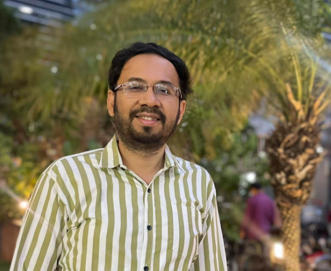

Hello and welcome to my corner of the internet.
I am Souvik Das, a program management professional currently working in the aerospace sector. Over the years I have worked with Airbus, Alstom and Accenture across program management, digital services, transformation initiatives and complex business environments.
Outside work, I am simply a curious person. I enjoy exploring ideas, cities, books, conversations, history, politics, economics and sport.
I hail from Kolkata (Calcutta), a city that remains close to my heart. I enjoy reading about its history, culture, architecture, intellectual traditions and industrial heritage. The city continues to inspire me and I hope its unique character and cultural richness are preserved for future generations.
This website is where I share thoughts, experiences, travel stories, books, conversations and reflections on the world around me.
My professional career has taken me through multiple industries and geographies.
I have worked with Accenture, Alstom and Airbus, primarily in program and project management roles. My experience spans engineering, digital transformation, stakeholder management, delivery governance and large-scale programs.
What I enjoy most is helping people and teams turn complex ideas into successful outcomes.
I enjoy reading across different schools of thought and philosophies. My interests range from economics and governance to politics, public policy and society.
I have read works from very different ideological traditions—from Marxist literature and the Communist Manifesto to writings associated with cultural nationalism, liberalism and conservatism. I enjoy understanding perspectives rather than fitting neatly into labels.
I generally consider myself a centrist, supportive of free markets, globalization and open exchange of ideas while also valuing institutions, traditions and social cohesion. Above all, I believe good governance, capable bureaucracy, economic opportunity and human well-being matter more than ideological battles.
I am also interested in Vedanta and Indian philosophical thought, particularly questions around meaning, ethics and human nature.
Travel is one of my favourite ways to understand people and cultures.
Europe remains my favourite region to explore and London is among my favourite cities. I enjoy wandering through museums, bookstores, cafés, historical districts and public spaces.
Food is another passion. Bengali cuisine will always be home, but I am equally fond of Chinese food and the uniquely iconic Kolkata biryani.
I also enjoy detective fiction of all kinds and own far more books than I realistically manage to finish.